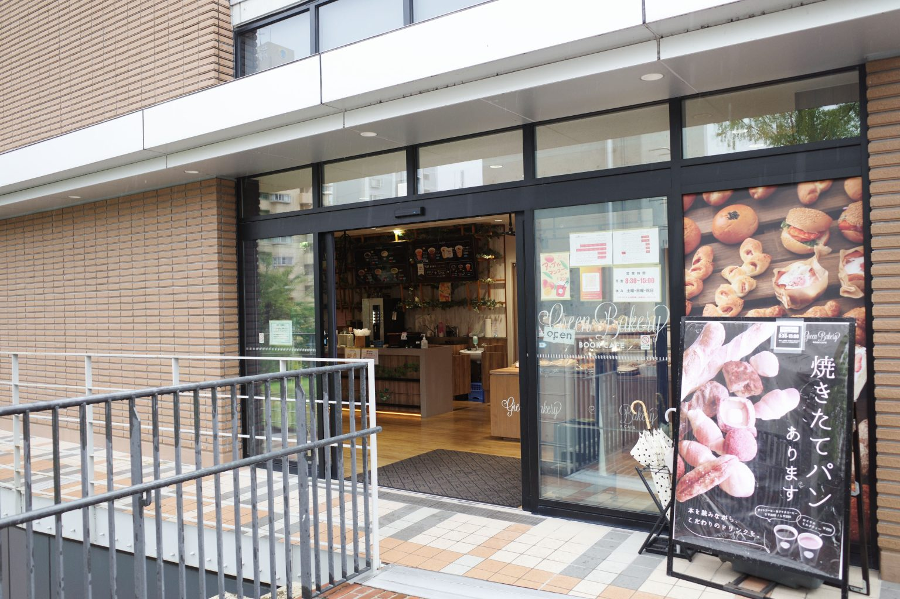
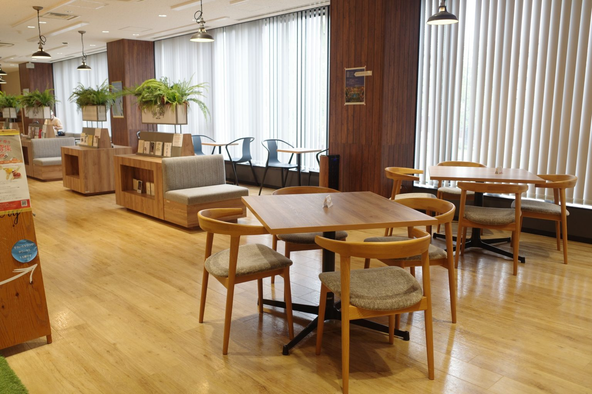

Green Bakery Book Cafe
緑あふれるカフェでリラックスしたひと時を

名城大学にあるGreen Bakery Book Cafe
名城大学天白キャンパスの正門付近にある校友会館二階に入っている「Green Bakery BOOK CAFE」。 店内のキッチンで焼き上げるおいしいパンを、たくさんの本と一緒に楽しめる
日々の疲れを癒すご褒美時間に
店内にはさまざまな種類のパンが並び、広々とした店内でゆったりとした時間を過ごすことができる 学生だけでなく一般のお客さんも利用することができるため名城大学に用事がある際は立ち寄ってみてはいかがだろうか

access
accsess map
店舗名
Green Bakery BOOK CAFE
所在地 愛知県名古屋市天白区塩佂口1-501 校友会館 2
営業時間 【月~金】8:00~19:00 【土】 9:00~14:00
定休日 学校カレンダーに準ずる